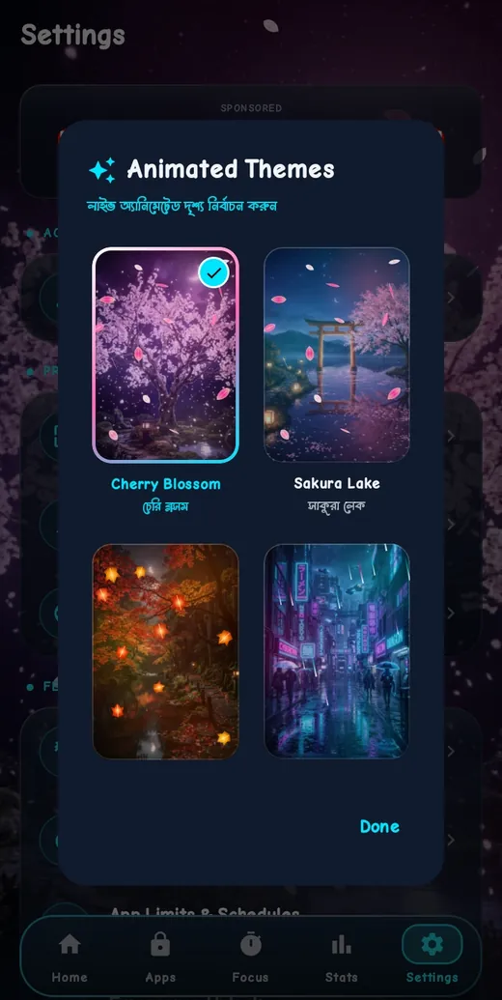

Features
What FocusLock can do
A focused set of tools, all in the app today. Jump to: Limits · Locking · Challenges · Tracking · Notifications · Customization · Privacy
App time limits
Set a limit for each app
- Every installed app is listed, with a search box
- Filter by All, Limits or Blocked
- A switch and a daily limit for each app
- Apps that tend to eat time are tagged Distracting
- Templates and schedules save setup time
- A warning comes before the limit is reached

Automatic locking
A block screen, not a surprise
FocusLock notices which app is open. When a limit is reached, or a Focus session is running, a block screen covers the app.
- Stay Locked In closes the app and takes you home
- Complete Challenge to Unlock opens your chosen challenge
- Emergency Bypass gives short access for something urgent, with a daily limit

Focus mode
Deep work sessions
Pick a length from 15 minutes to 2 hours and press Lock In. Distracting apps stay blocked until the timer ends. With your permission, FocusLock can also use Do Not Disturb to quiet notifications.

Unlock challenges
Four ways to earn more time
Choose which ones are on. Each one adds a short pause before you open a limited app.
Mental math
Solve a quick sum to continue.
Patience and stillness
Wait out a 30-second countdown. You can give up at any time.
Mindful typing
Type a sentence exactly. This unlocks 5 extra minutes.
PIN
Enter a PIN that you set.


Usage tracking
Know where your time goes
- Analytics, Insights and Goals tabs
- View Today, Yesterday or This Week
- Total usage, focus time and blocked apps
- Focus streak with milestones at 3, 7, 14 and 30 days
- Daily screen time trend
- Levels and XP for staying on track

Notifications
Warnings you can act on
FocusLock tells you when you are close to a limit and when an app has been locked. You can manage alerts from Settings.
Customization
Make it yours
- Animated background themes: Cherry Blossom, Sakura Lake, Autumn Leaves, Cyber Rain, Aurora Forest and Deep Ocean
- Six languages: English, Bangla, Spanish, French, Arabic and Portuguese
- Backup and restore from Settings


Privacy
Your data stays with you
No account is needed. Limits, usage and goals are stored on your device. The permissions FocusLock asks for are explained on the privacy page.